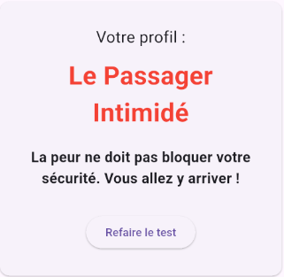
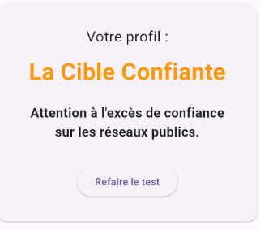
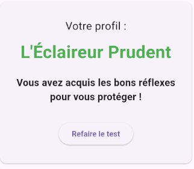
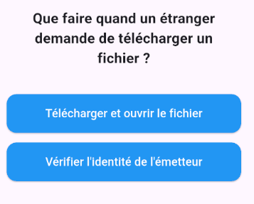
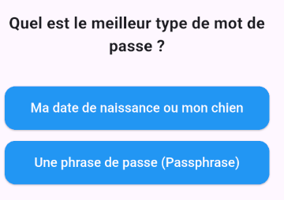
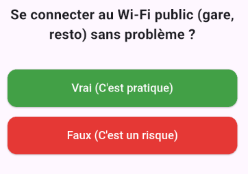

Épreuve E5
Parcours de compétences & Réalisations
Travailler en mode projet
Project : CyberScore
Application QCM réalisée pour le CMCS 2026
Le Concept
L'objectif pour l'utilisateur est de tester ses connaissances en cybersécurité pour identifier ses potentielles faiblesses.
Les Profils de score
- Le passager intimidé : Manque de connaissances de base.
- La cible confiante : Connaissances moyennes mais comportement à risque.
- L'éclaireur prudent : Bonne maîtrise des enjeux de sécurité.



Exemples de questions



Démonstration
Organiser son développement professionnel

MOOC - Intelligence Artificielle